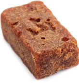
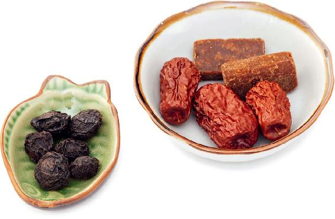
这是个传统方，产妇在产前吃可以增强体力，补益作用很强，所以称其有胜过人参之功。
原方出自清代王孟英的《随息居饮食谱》：“玉灵膏，一名代参膏。自剥好龙眼，盛竹筒式瓷碗内，每肉一两，入白洋糖一钱，素体多火者，再入西洋参片，如糖之数。碗口幂以丝绵一层，日日于饭锅上蒸之，蒸到百次。凡衰羸、老弱，别无痰火、便滑之病者，每以开水瀹（yuè）服一匙，大补气血，力胜参芪。产妇临盆服之，尤妙。”
由于现在的白糖已无以前白糖的功效，所以我把这个方子改为配蜂蜜。蜂蜜是补益药常用的药引，可以增强滋补作用。同时它微微偏凉性，可以平衡一点桂圆肉的热性。
代参饮特别适合于身体虚弱、贫血、用脑过度的人，能大补心血。
【原料】
干桂圆肉500克、蜂蜜50克。
【做法】
【功效】
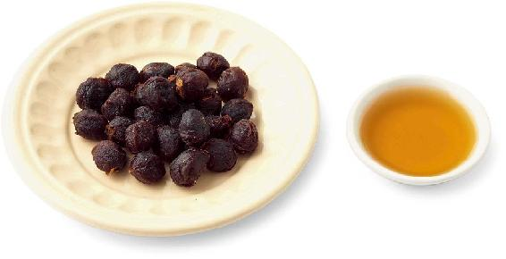
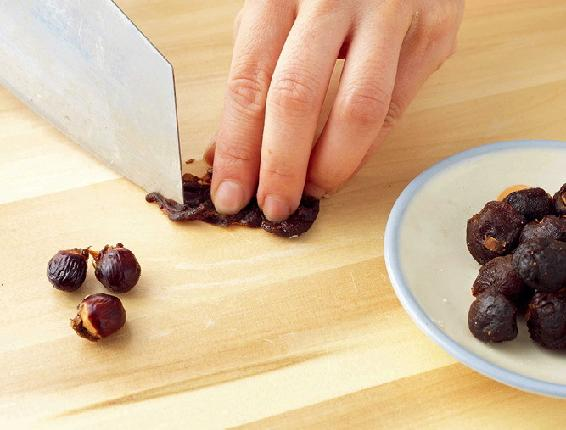
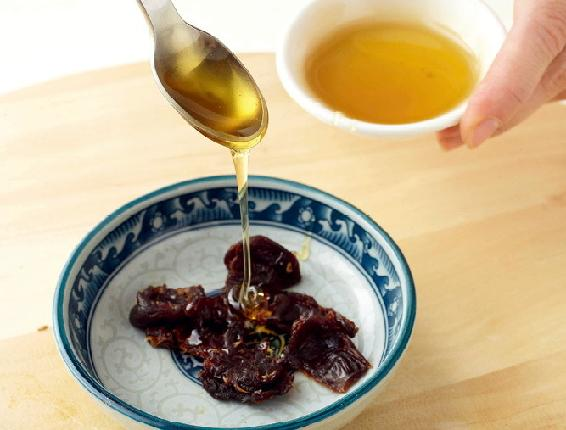
允斌叮嘱
读者评论
——简单
——简简单单
——天涯海角
——17群读者
允斌解惑
1.简单问：书上写上锅蒸2小时，可是我之前也有看到写的是蒸6小时，到底蒸多长时间呢？桂圆是蒸的时间越长越好吗？那蒸12小时可以吗？我有时候是放在顺时粥里一起吃，就是粥快煮好的时候，放两勺进去，闷一会儿，就和粥一起吃了，这样吃可以吗？
允斌答：可以久蒸。蒸的时间越长，越不容易上火。蒸好后的代参饮，放顺时粥或者银耳羹里一起吃都很好。
2.枫问：大补心血茶方把干桂圆肉切碎和蜂蜜拌匀，上锅蒸2小时，不明白为什么用蜂蜜，蜂蜜在此起什么作用？蜂蜜经高温蒸2小时，它的营养成分不都消失殆尽了吗？
允斌答：蜂蜜是可以高温加热的，一些网络流行的说法并不全面。加热后，或许会损失一点活性物质和花香。正如把菜炒熟也会损失部分维生素，可我们并不会因为这样就只吃生菜。食物生、熟各有其作用，蜂蜜也是如此。
蜂蜜是辅助中药的药引，中成药蜜丸多以蜂蜜制作。在这个方子里，我们取的是它与桂圆共同蒸制的作用。
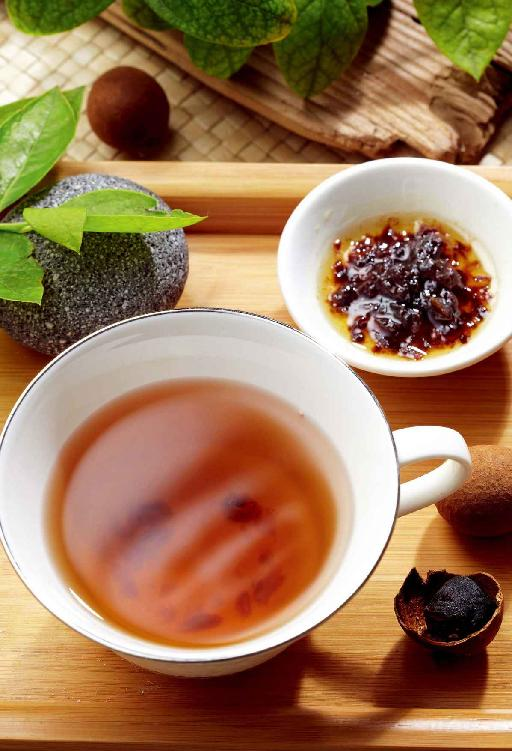
“血药不容舍当归”——凡是与血相关的病，都可用到当归。
将当归与黄芪搭配，气血双补，生血的效果倍增。
这个方子，气血两亏的人长期代茶饮都可以。古人是把黄芪看成食材的，运用在寻常餐食之中，特别是大病初愈，或是长期吃素的时候，由于气血营养不足，他们往往会用到黄芪来补气。
【原料】
生黄芪600克、当归120克、红糖100克。
【做法】
【功效】
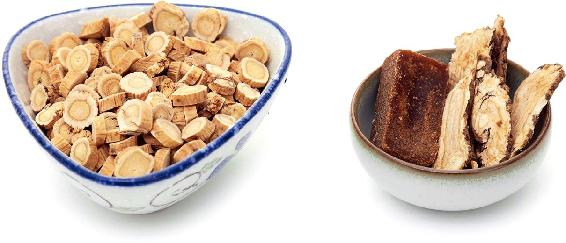
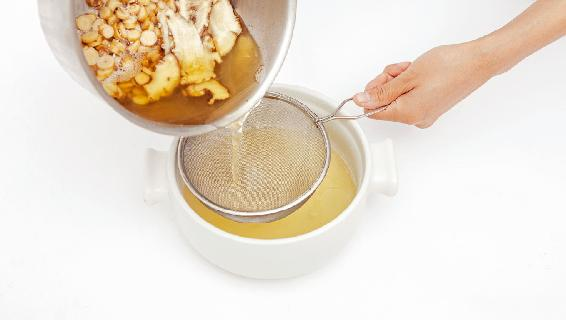
允斌叮嘱
这个配方为经典的补血名方，补血效果相当强。其中黄芪、当归的比例不要轻易改变，一定是5︰1效果才好。用这个比例配伍的当归和黄芪一起煎煮，所产生的功效最佳。
——简单
——灵
——幸福持有者
——6群读者
——芳芳–湖北
——清晨的阳光
允斌解惑
1.Smile问：当归黄芪水月子里能喝吗？是不是得等恶露排净了才能喝呢？
允斌答：产妇在月子里喝过荠菜水、吃过鱼腥草炖鸡这两个产后食方之后，就可以喝了。
2.简单问：补气生血饮中黄芪、当归按5︰1的比例可以补血，那可不可以加上党参一起熬煮呢？补气生血的效果会更好吗？如果可以，那党参的比例是多少？我体质很差，气血不足严重，可不可以长期吃呢？
允斌答：党参也是治疗贫血的重要中药，加党参可以增强补气血的作用。每日15〜30克。这个方子是可以长期饮用的。
3.畅烊问：我气血虚，现在正在喝黄芪当归茶，感觉整个人皮肤红润了很多。黄芪当归茶可以加红枣吗？
允斌答：当归黄芪是基础方，在这个基础上，根据个人情况加入党参、红枣、玫瑰、红糖等食材都是可以的。
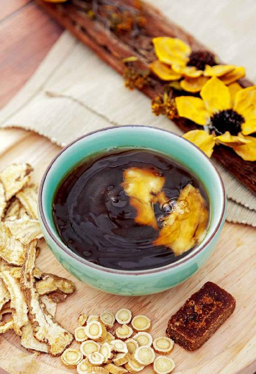
体内有血瘀的人，往往嘴唇发乌、发紫，皮肤也容易变得粗糙。有的人在身体的某个部位还经常会有顽固性的疼痛，女性会痛经。这样体质的人要以养心为重点。心主血脉，如果心脏功能强，血就不容易瘀阻。
这道茶既养心、补肾，又可以活血化瘀。
【原料】
桂圆肉500克、核桃仁250克、红糖250克。
【做法】
【功效】
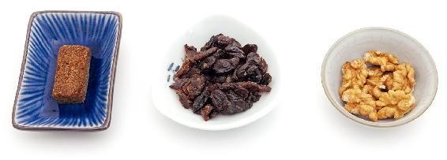
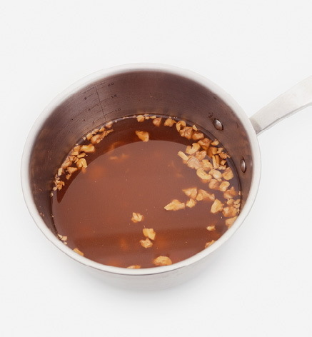
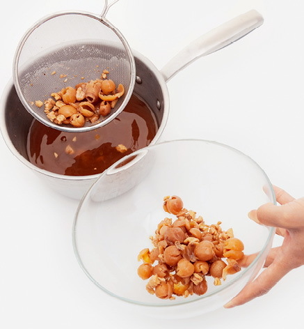
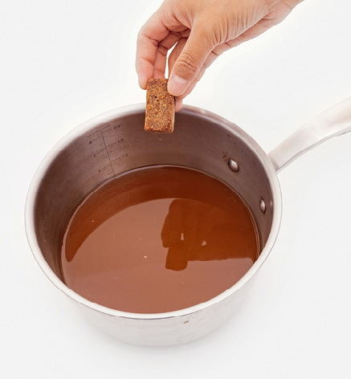
允斌叮嘱
读者评论
——萧小草
——珉珉
——多肉繁露
——家种苹果
——29群读者
——明
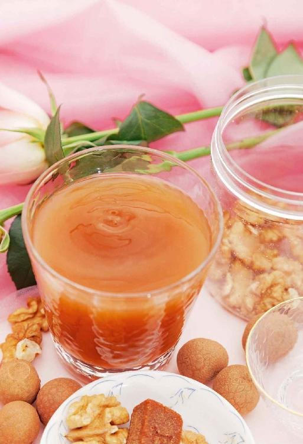
长期血虚也会造成阴虚。有的人睡觉时觉得燥热不舒服，就会把被子撩开。撩开被子冷，盖上又出汗，这就是阴虚盗汗，可以喝乌梅大枣汤来改善。
【原料】
乌梅60个、大枣30枚、红糖20小块。
【做法】
【功效】
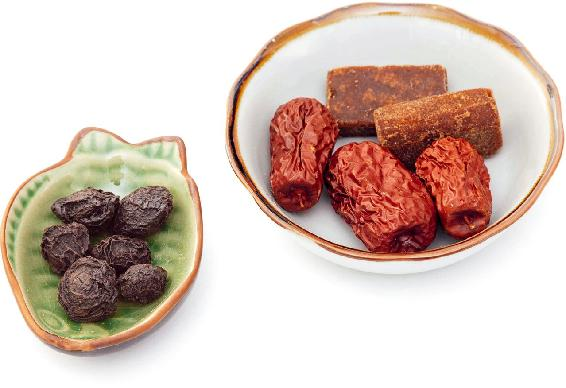
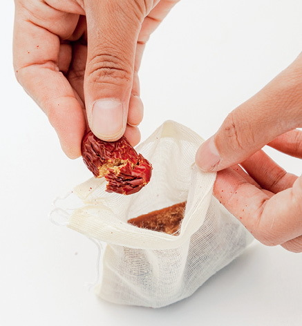
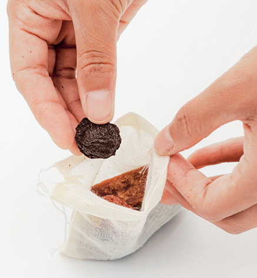
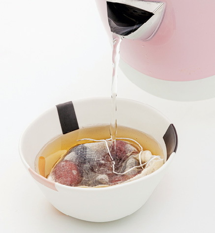
允斌叮嘱
乌梅是一种中药，在正规药店都有卖。
读者评论
——暖阳
——兰竹
——法图麦&杨
——神珠
——我的世界
——尤艺霖
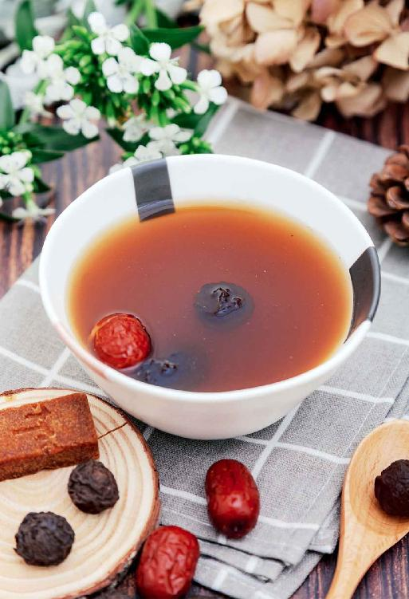
月季是通血脉的，可以防止血液过于黏稠，对于预防心血管病也有好处。
【原料】
干月季花60朵、枸杞子150克。
【做法】
【功效】
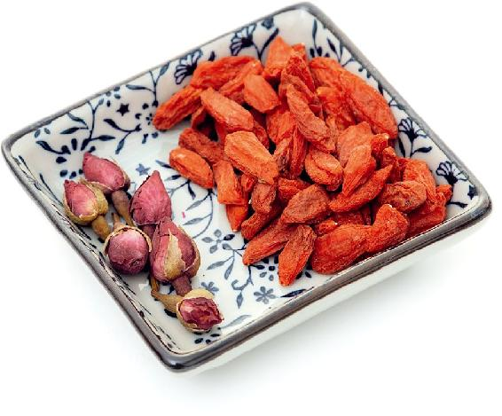
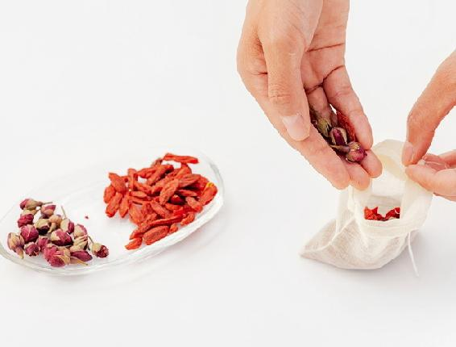
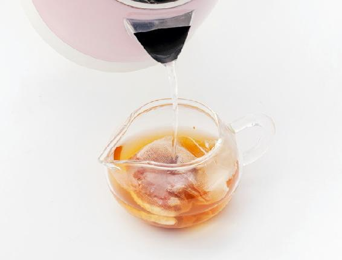
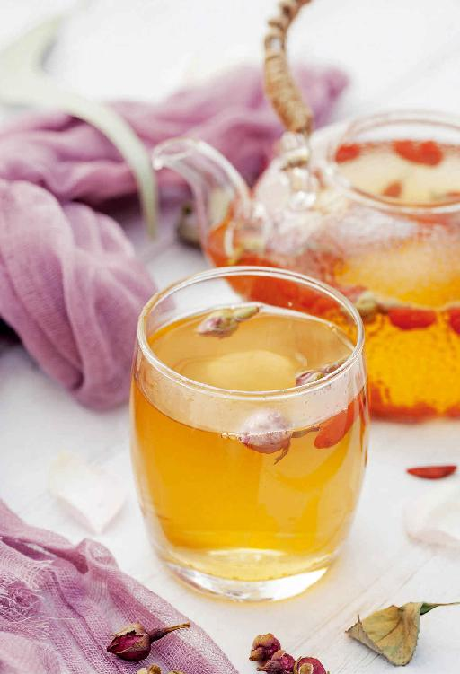
有的人经常无缘无故流鼻血，特别是小孩子，有时候晚上睡觉会流得满枕头都是。这是身体有内热的表现，可以喝这个茶方来调理。
松针的处理和储存方法：
1.用一盆清水，加少量面粉搅匀，放入松针，泡1小时，冲洗干净。
2.再用一盆清水，加少量碱粉溶化，放入松针，泡1小时，冲洗干净。
3.处理好的新鲜松针，可以放入冰箱冷藏，能保存一个星期。放在冰箱冷冻格，则可以长期保鲜，可以随时取出来用。
【原料】
新鲜松针1把、生面粉1勺。
【做法】
【功效】
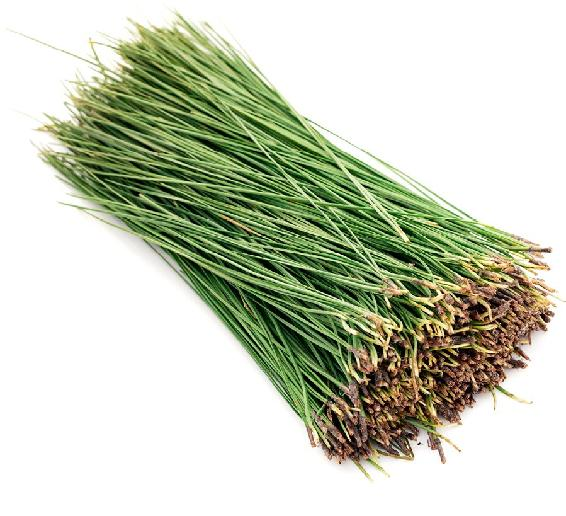
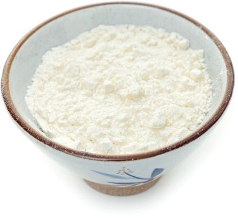
允斌叮嘱
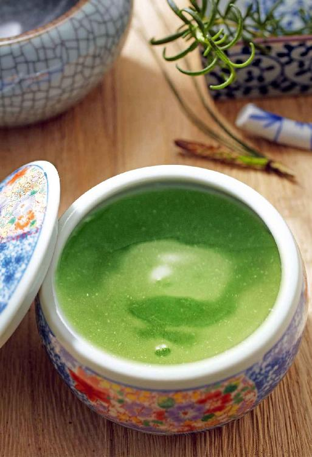